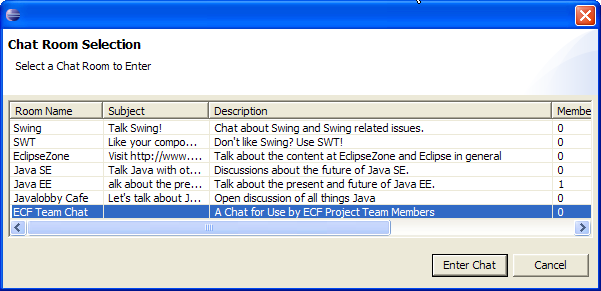
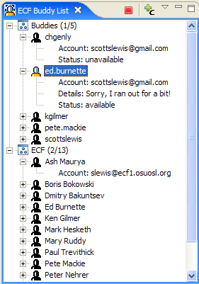
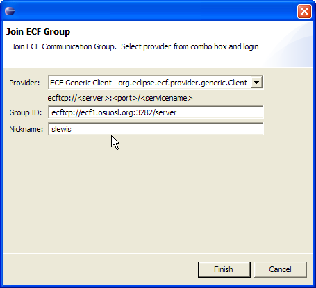
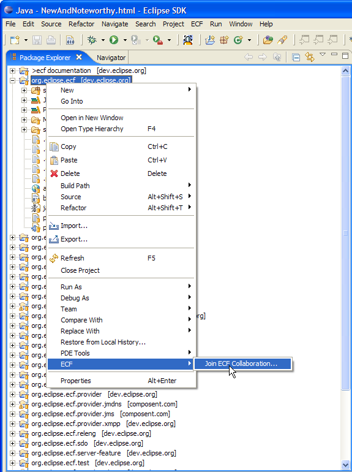

an eclipse technology subproject
New and Noteworthy
0.4.0 Stable Release

|
eclipse communication framework
an eclipse technology subproject New and Noteworthy 0.4.0 Stable Release |
|
| |
|
Instant Messaging Improvements |
|
|
Support for Jabber/XMPP MultiUser Chat |
The XMPP provider now provides access to server chat rooms. Once connected to
a jabber server, the ECF Buddy List view provide a list of available chat rooms via the
icon with small plus and 'C' in the upper right of the buddy list view: Selecting this toolbar button will produce a list of chat rooms:  |
|
Interoperability with Google Talk IM |
The XMPP provider now provides support for using your Google Talk IM/Gmail account.
To connect to your google talk/gmail account, bring up the 'Join ECF Group' dialog
via the ECF toolbar button : Once logged into the account your Google Talk buddies will appear in the ECF Buddy List and you can IM them via the buddy list context menu |
|
Support for Multiple Jabber/XMPP Accounts |
The Buddy List view now supports presenting buddy lists from multiple Jabber/XMPP accounts. Opening up the 'Join ECF Group' dialog via the ECF toolbar button and connecting to multiple Jabber/XMPP accounts will present all the buddies for all connected accounts:  |
| |
|
Team Collaboration Improvements |
|
|
Access to ECF Collaboration Server Groups |
The org.eclipse.ecf.example.collab plugin provides access to ECF generic server-provided collaboration groups. These collaboration groups provide access to multi-user chat, group file sharing, group co-web-browsing and a few other features. These collaboration groups can be joined with the 'Join ECF Group' dialog via the ECF toolbar button : Or, the project context menu:  |
| |
|
New ECF Provider Implementations |
|
|
Java Messaging Service (JMS) Provider Implementation |
An ECF provider that uses ActiveMQ's implementation of the Java Messaging Service is now available. To use this provider immediately, please contact the ECF team directly at ECF dev mailing list. |
|
Zeroconf Discovery Provider Implementation |
An ECF provider implementing the org.eclipse.ecf.discovery API is now available that uses the Zeroconf/Bonjour protocols. To use this provider immediately, please contact the ECF team directly at ECF dev mailing list. |
| |
|
ECF API Changes |
|
|
Simplification of ECF Namespace Extension Point |
The ECF Namespace extension point has been vastly simplified. This allows plugin developers to easily substitute their own Namespace implementation for the creation of ID instances. See the schema documentation in the org.eclipse.ecf/schema/namespace.exsd schema definition file or in the Eclipse ECF Developers Guide in the Eclipse Online Help. |
|
Simplification of ECF Container Factory Extension Point |
Previously, ECF provider implementers had to provide an extension for the ECF 'containerFactory' extension point, and this extension point required that the supplied containerFactory had to create instances of the ISharedObjectContainer interface. The requirements on containerFactory extensions have been simplified so to that they now only must produce instances that implement the much simpler IContainer interface. This makes it significantly easier for ECF providers to be created that have very simple and lightweight functionality, without requiring support for the distributed component model required by ISharedObjectContainer |
|
API Method and Class Name Changes |
A number of class and method name changes have occurred for consistency and API usability. For example, previously the core methods for initiating a connection with a single or group of remote processes was IContainer.joinGroup(). Now, it is IContainer.connect() |
|
Revised Architectural Overview Documentation |
|